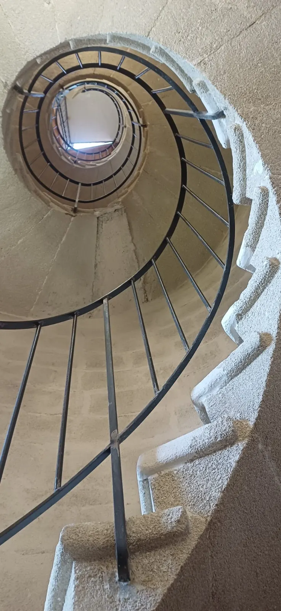

Professionnels de santé · Parcours collectif
Un chemin pour soiSix rencontres pour préserver son équilibre quand on prend soin des autres.

Le parcours
Faire une pause, pour mieux continuer
Un parcours collectif qui invite les professionnels à mieux comprendre leur fonctionnement, repérer leurs ressources et leurs signaux d'alerte, expérimenter des façons de réguler les tensions et identifier des actions concrètes pour la suite.
Chaque rencontre alterne apports courts, échanges entre pairs, réflexion personnelle et expérimentation.
Six étapes
Six marches, pas à pas
01S'arrêter
Faire le point sur son état, ses besoins, ses ressources et son niveau de tension.
Prendre conscience de ce qui mérite son attention.02Comprendre
Stress, charge émotionnelle, hyper-responsabilité, empathie, perfectionnisme.
Mettre des mots sur ce qui peut fragiliser.03Repérer
Identifier ses signaux personnels : corps, émotions, pensées, comportements.
Reconnaître plus tôt les signes de déséquilibre.04Réguler
Expérimenter respiration, attention, mouvement, récupération.
Trouver des ressources utilisables au quotidien.05Se préserver
Limites, juste distance, assertivité, culpabilité, situations difficiles.
Prendre soin sans se perdre ni tout porter.06Agir
Construire son plan de prévention : ressources, vigilance, personnes-relais.
Passer de la prise de conscience à l'action.
Cliquez sur une marche pour découvrir chaque palier.
Pour qui, et comment
Format indicatif
Pour les équipes et professionnels des hôpitaux, EHPAD, CCAS, centres médico-sociaux, structures de santé et soignants en exercice libéral.
- Format6 × 2 h 30toutes les 3 à 4 semaines · 6 à 10 personnes
- OptionVersion outdooravec 2 marches expérientielles intégrées
- Sur mesureSur deviscalendrier, contenu et modalités ajustables